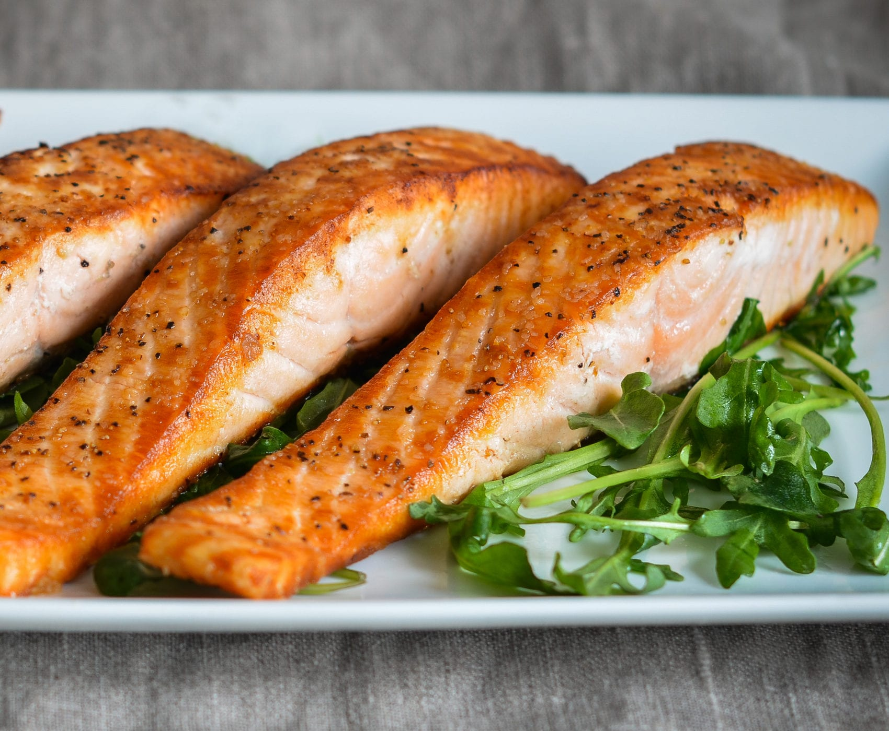

Salmon
Description
The key to perfect pan-seared salmon lies in choosing the right size fillets, seasoning them well, and allowing them to cook undisturbed. This technique, especially leaving the salmon untouched in hot oil, ensures a beautiful, golden crust that elevates the dish to restaurant quality.
Ingredients
- 1 tablespoon extra-virgin olive oil
- ½ teaspoon salt (whichever kind you like)
- ½ teaspoon ground pepper
- 4 (6-ounce) salmon fillets, 1¼ in thick (You can remove the skin, but it's fine to leave it on if you like)
Steps
- Begin by seasoning the salmon with salt and a few grinds of pepper. Don’t skimp on the salt—the biggest mistake most home cooks make is under-seasoning their food.
- Heat the oil in a 12-inch nonstick skillet over medium-high heat until hot and shimmering. Cook the salmon, skin side up, until golden and crisp, about 4 minutes. Resist the urge to fiddle with the fillets as they cook. Letting the fish sear untouched in hot oil creates a lovely, flavorful, and golden crust.
- Carefully flip the fillets and reduce the heat to medium. Continue cooking until done to your liking, 4 to 5 minutes more.
- Transfer to a platter and serve. Enjoy!